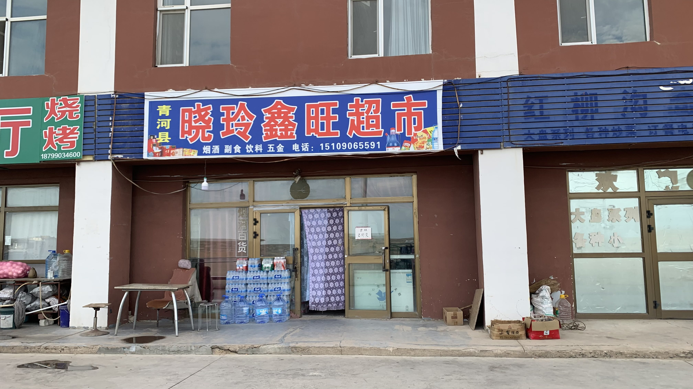
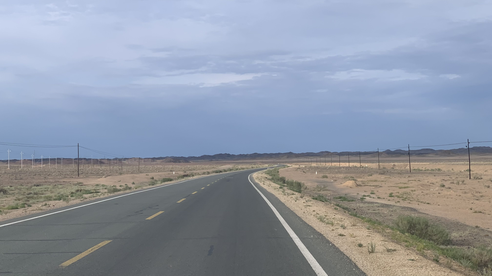
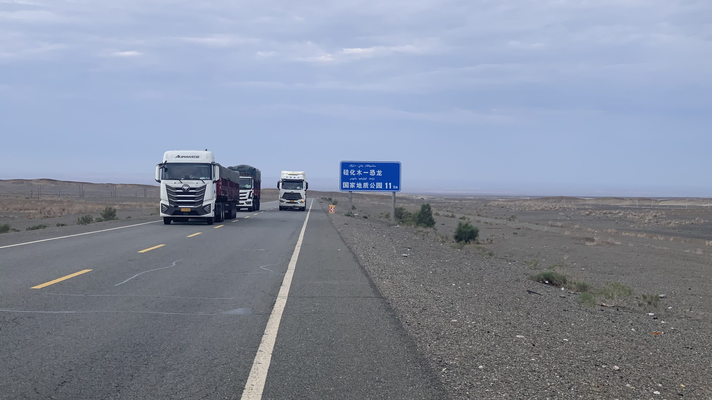
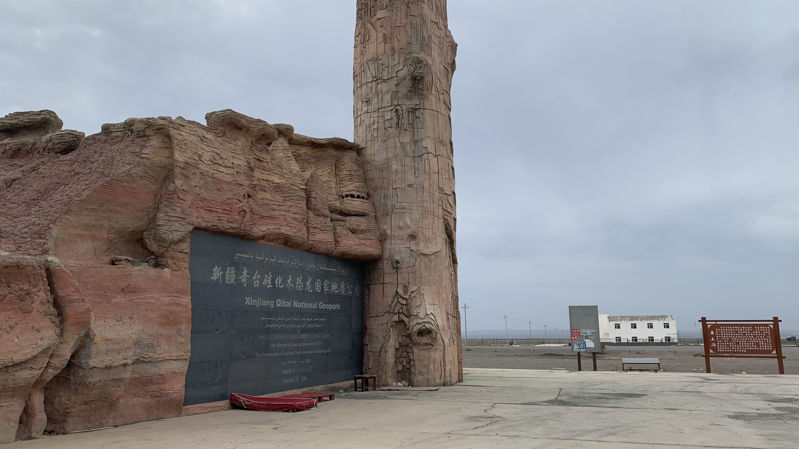
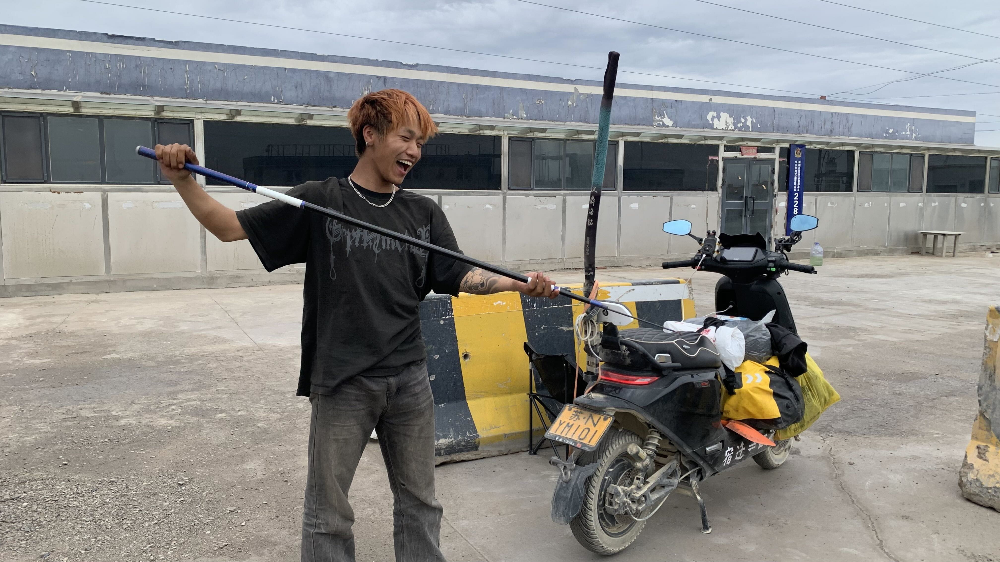
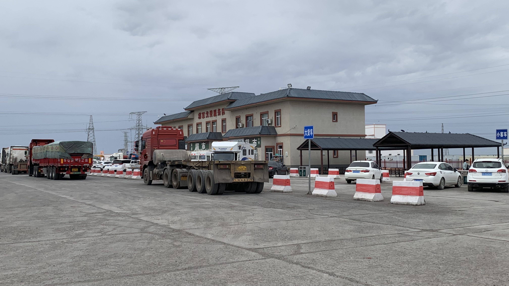
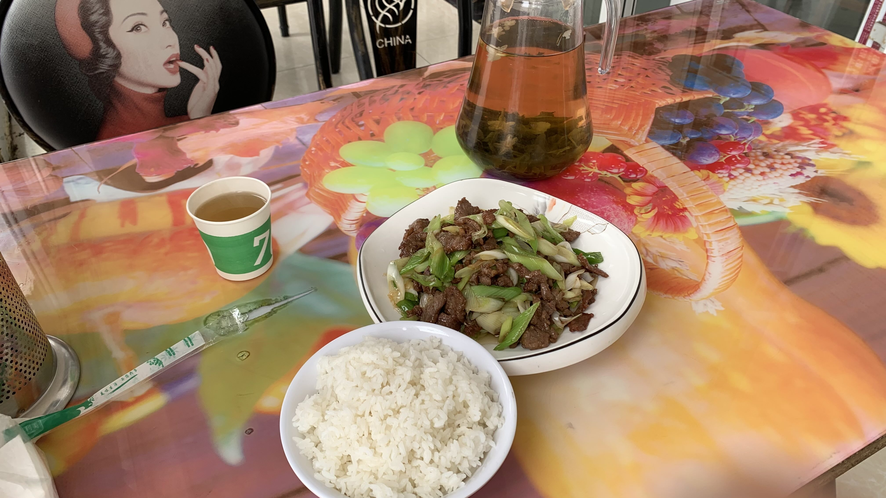
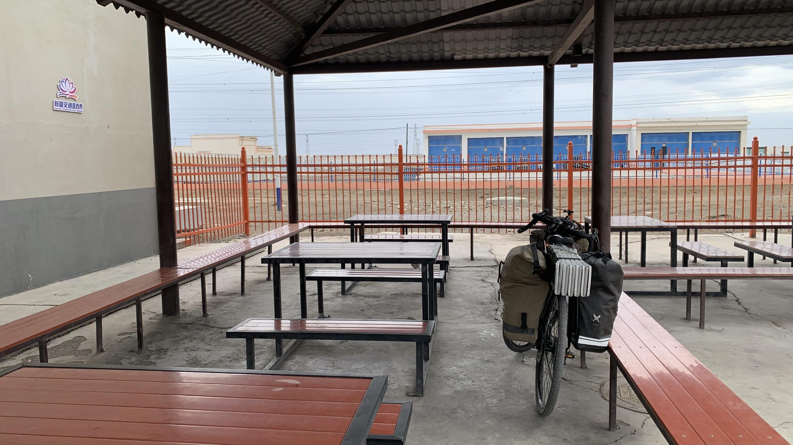
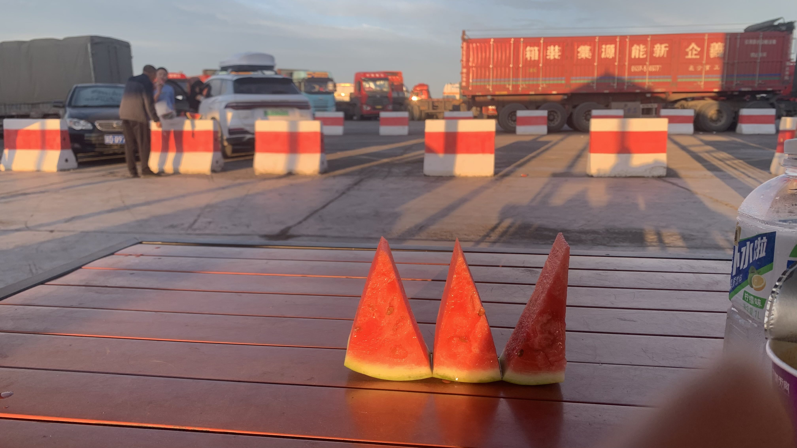

k-Day 127｜江蘇少年與哈密西瓜

七點多起床收拾，隔壁的超市已經開門營業，買了海綿蛋糕和葡萄糖補水液坐在門口和老闆討論路況。接下來應該會先到將軍廟，接著有兩條路線，一個是往五彩灣，另一條往南到奇台，昨天問過奇台有許多好吃的，還有手工酸奶。

眼前的景色和在蒙古時看到的差不多，但感受完全不同。有許多人造痕跡，使現場無法呈現出孤絕感。

硅化木和恐龍化石都是這裡的特點，經老闆推薦，到景區晃了一圈。

景區是廢棄的，廣場上擺放著桌子和床墊，塑膠袋裡吃剩的西瓜皮招來許多蒼蠅。
路上很無聊，全都是為了礦區存在的景色，因此沒拍什麼照片。快到將軍廟時路況變得非常差，前方似乎正大規模修路。卡車全都堵在路口，那就躲到公安檢查站後面休息一下吧。

有輛電動車也停在後面，走進一問，這位少年從江蘇一路騎車到西藏，北上新疆要繞回家時被警察抓了。
「他們說新疆要幫車牌報備，我不知道，就被抓了。現在在等他們帶我去火車站搭車。」
「那你為什麼會騎到這裡呢？」實在有點好奇。
「我來釣魚。」說完他大笑著抽出插在機車後面的釣魚竿。「西藏不能釣魚，他們有水葬，魚會吃到，我在那裡要釣魚時他們和我說的。還有天葬，你看對生命會有不同看法，還有......」
「沒看過被抓還興奮成這樣的。」我看他一直笑，忍不住吐槽一句。
「因為已經是回程了啊。」說著又大笑了起來。

告別釣魚少年，往馬路另一邊的將軍廟休息站移動。是個大站呢。

點了一盤蔥爆牛肉和一碗米飯，茉莉花茶是附贈的，上面真的飄著白花。
吃飽後到隔壁超市買了一隻奶糕和飲料，二十三號身邊已經聚集了一群人。幾位卡車司機和附近的補胎大哥問了我的路線後讓我一定要研究好，其中一位司機特別激動，說自己前不久才拉了一個也是騎車的，在路邊中暑。

風越來越大，離開蒙古後就沒有再打開風圖，此刻風速又來到每小時五十幾公里。先躺在長椅上睡覺吧，要是五六點風小了就繼續，還颳風就在此過夜。有人造建築擋著風，旁邊還有超市廁所，什麼也不缺的。

晚上七點多，一輛白色休旅車開進休息站，是爺爺奶奶帶著孫子出來旅遊。吃著泡麵看他們從後車廂搬出帳篷，行李下方塞著半顆西瓜啊。
也許是感受到我的眼神，爺爺拿了一大塊西瓜，切成三片後遞給我。
他們是從哈密開車來此露營的，看到有人一樣帶著帳篷相當安心。
今日花費： 早餐 23、飲料 11.61、奶糕＋飲料 25、蔥爆牛肉＋白飯 46、泡麵＋飲料 12元